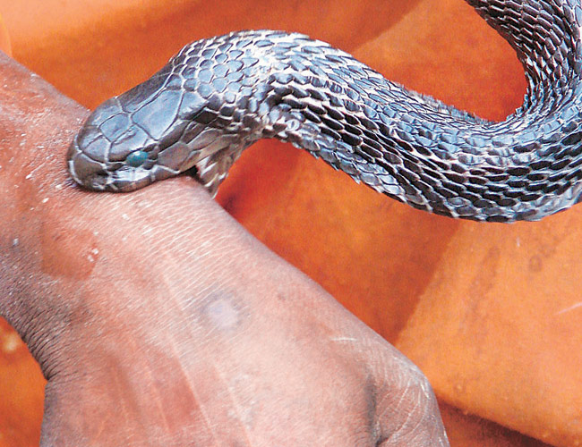

5 things to know About rattlesnakes and their babies

UA College of Pharmacy|Aug.6,2014
Arguably,snake season is year-around in Arizona,a state known for its rattlers.But baby rattlesnakes are born in july and August,making these two months especially dangerous for hikers,garderners,Children and others at high risk of exposure to rattlesnake bites.
So far this year,74 rattlesnakes bites to humans have been reported to Arizona poison and Drug information Center.Based at University of Arizona College of Pharmacy, the center serves the entire state of Arizona with exception of Maricopa County,providing free and confidential poison and medication information to callers around the clock.
Specialists answering the phones at the center regularly receive calls from Arizonans os all ages who don't realize they were bitten by rattler.The poison center urges anyone who feels a mysterious sting ,pinch or bite outdoors to immediatley call the center at 800-222-1222
"We will ask a few questions that help you either identify possible snakebite or eliminate it",said Keith Boesen,director of the Arizona Poison and Drug Information Center."With Snakebite , the sooner the medical treatment,the better, the Outcome,so calling us right away can make avery big difference for the victims and medical teams and treating them."
The center advises anyone who might come cross paths with rattlesnakes to be aware of these five things: